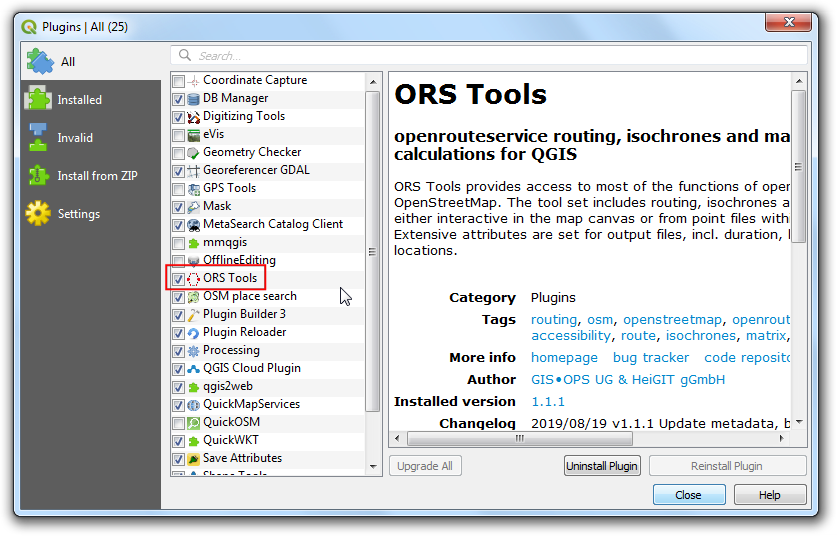
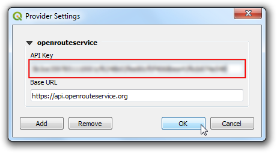
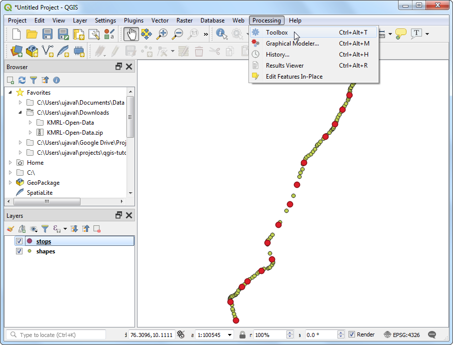
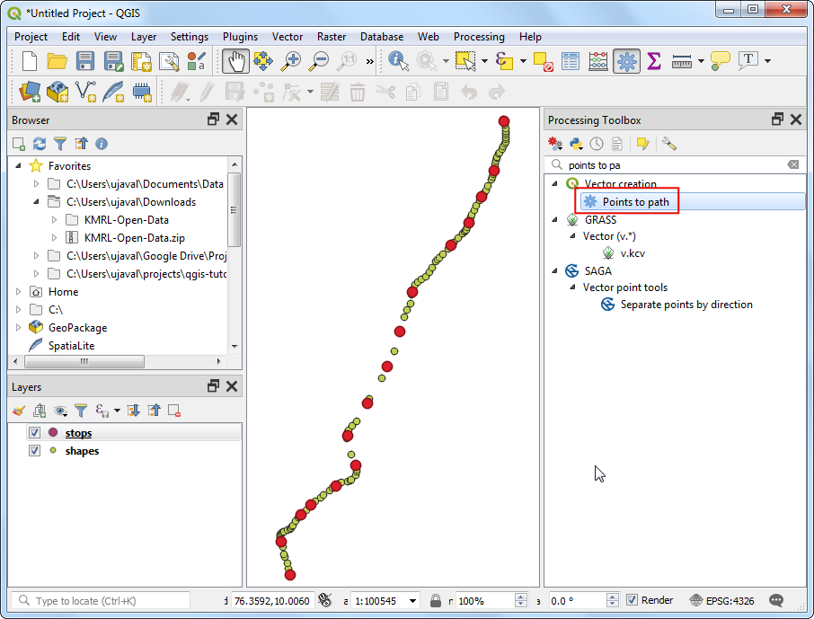
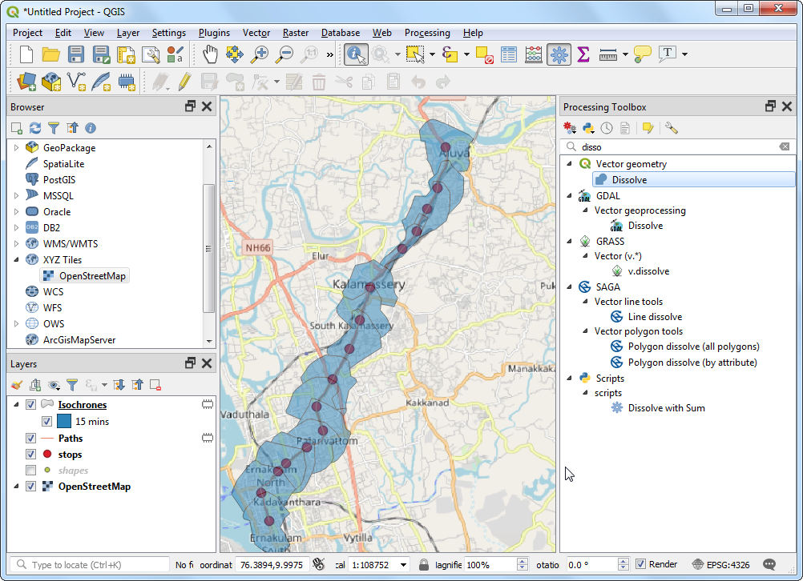
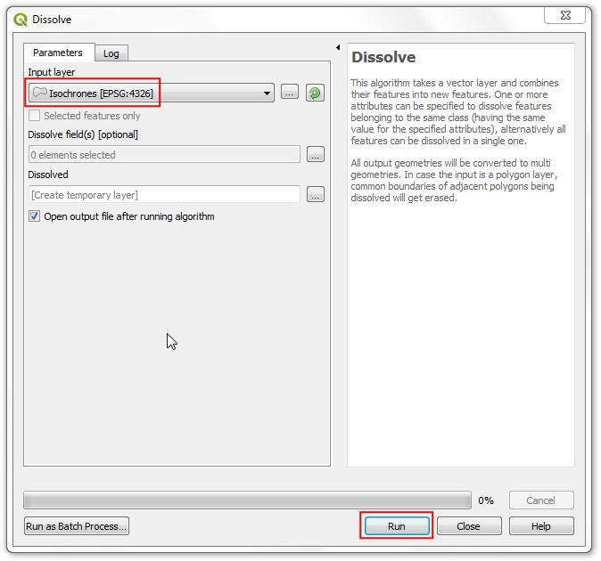

Ujaval Gandhi
Ujaval GandhiOpenrouteservice를 이용한 서비스 영역 분석(QGIS3)¶
서비스 지역 분석은 위치의 접근성을 평가하는 데 유용합니다. 소방서, 병원, 대중 교통 정류장 등의 위치를 고려할 때 이러한 분석을 사용하여 이동 한 거리 또는 소요 시간에 따라 이러한 위치에서 어떤 지역에 서비스를 제공 할 수 있는지 확인할 수 있습니다. 최근까지는 오픈 소스 도구와 데이터를 사용하여 이러한 분석이 어려웠습니다. 그러나 이제 OSM (OpenStreetMap) 및 OpenStreetMap (OSM) 데이터를 사용하여 복잡한 라우팅 작업을 수행 할 수있는 ORS (Openrouteservice)와 같은 무료 웹 서비스를 사용하여 글로벌 거리 네트워크에 액세스 할 수 있습니다. 이 자습서에서는 ORS 도구 플러그인을 사용하여 QGIS에서 서비스 영역 분석을 수행합니다.
작업 개요¶
인도 고치의 지하철 역 데이터를 사용하여 도보 거리에서 15 분 이내의 지역을 찾습니다.
기타 스킬¶
QGIS에서 GTFS (General Transit Feed Specification) 운송 피드 데이터를 로드하는 방법.
포인트 투 패스 도구를 사용하여 순차적 포인트 데이터를 라인 트랙으로 변환하는 방법
데이터 획득¶
코치 메트로 레일 리미티드 (KMRL)는 코치 메트로 레일 프로젝트에 대한 공개 데이터를 GTFS 정적 (Global Transit Feed Specification) 형식으로 제공합니다. Open Data 페이지를 방문하여 데이터 다운로드를 요청하십시오.
아래 링크에서 이번예제에 사용되는 샘플파일을 쉽게 내려받을 수 있습니다
데이터 출처:[KMRL]
설정¶
Openrouteservice API <https://openrouteservice.org/>는 OpenStreetMap의 무료 지리 데이터에서 작동하는 라우팅 알고리즘을 제공합니다. QGIS 플러그인을 통해 액세스 할 수있는 무료 웹 기반 서비스입니다. 서비스는 무료이지만 가입하고 API 키를 받아야합니다. API 키는 남용을 방지하고 사용을 제한하는 데 사용됩니다.
Openrouteservice 가입 페이지를 방문하여 계정을 생성하십시오. 계정이 활성화되면 대시 보드를 방문하여 token을 요청하십시오 token 유형으로 Free를 선택하고 토큰 이름으로 ORS Tools QGIS를 입력 한 후 creat token을 클릭하십시오.

작성되면 키 아래에 표시된 긴 문자열을 복사하십시오. 이 서비스의 사용을 승인하는 데 사용될 계정과 연결된 고유 식별자입니다.

QGIS를 엽니 다. Plugins ‣ Manage and Install plugins를 방문하십시오. ORS Tools plugin을 검색하여 설치하십시오. 닫기를 클릭하십시오.

기본 QGIS 창에서 Web ‣ ORS Tools ‣ Provider Settings로 이동하십시오.

openrouteservice 섹션을 펼치고 API 키 텍스트 상자에 키 (2 단계에서 복사)를 붙여 넣으십시오. 확인을 클릭하십시오.

과정¶
Unzip the downloaded
KMRL-Open-Data.zipfile to a folder on your computer. You will notice that the unzipped directory contains many text files. Each file contains data for a different aspect of the transit system. The format of the files and their uses are described in GTFS Reference. Out of all the files, 2 files contain geospatial data and are of interest to us. The fileshapes.txtcontains points that describe a physical path that the vehicle takes, and the filestops.txtcontains the location of each transit stop. Both of these are CSV files that can be imported into QGIS. Click the Open Data Source Manager button.

데이터 소스 관리자 대화 상자에서 구분 된 텍스트 탭으로 전환하십시오. 파일 이름 옆에있는 … 버튼을 클릭하고 shapes.txt 파일을 찾습니다. 파일 형식으로 CSV (쉼표로 구분 된 값)를 선택하십시오. X 필드와 Y 필드는 자동으로 채워 져야합니다. 추가를 클릭하십시오.

마찬가지로 … 버튼을 다시 클릭하고 stops.txt 파일을 선택하십시오. 추가를 클릭하십시오. 닫기를 클릭하십시오.

2 개의 새로운 레이어 정지 점과 모양이 레이어 패널에 추가 된 것을 볼 수 있습니다. 도형 포인트 레이어를 메트로 선의 경로를 나타내는 라인 레이어로 변환 해 봅시다. `Processing –> Toolbox 로 이동하십시오.

Vector creation ‣ Points to path 도구를 검색하고 찾습니다. 시작하려면 두 번 클릭하십시오.

In the Points to Path dialog, select
shapesas the Input point layer. As per GTFS specifications, each individual route has a uniqueshape_idso select that from the drop-down menu as the Path group expression. We can also specify the order of points that will form the line by selectingshape_pt_sequenceas the Order expression. Click Run.

새 레이어 경로가 레이어 패널에 추가됩니다. shape 레이어의 가시성을 해제하여 새로 추가 된 선 레이어를 볼 수 있습니다.

이제 메트로 스테이션과 라인 데이터가 추가되었으므로 네트워크 분석을 시작할 준비가되었습니다. Processing Toolbox에서 ORS Tools ‣ Isochrones ‣ Isochrones From Layer 도구를 검색하고 찾습니다. 두 번 클릭하여 시작

openrouteservice를 제공자로 선택하십시오. 각 지하철역에서 도보로 15 분 거리의 다각형을 계산할 것입니다. 입력 포인트 레이어로 정지를 선택하십시오. 입력 레이어 ID 필드로 stop_id를 선택하십시오. 여행 모드 드롭 다운에서 도보를 선택하십시오. 시간 기반 영역에 관심이 있으므로 시간을 차원으로 선택하십시오. 마지막으로 범위로 15 분을 입력하십시오. 실행을 클릭하십시오.

참고
Openrouteservice API는 Isochrone에 대해 분당 20 개의 요청으로 제한됩니다. 따라서 레이어에 20 포인트가 넘는 경우 속도 제한을 초과했음을 나타내는 오류가 표시 될 수 있습니다. 작업을 유지하며 분당 20 포인트를 계속 처리합니다.
작업이 완료되면 레이어 패널에 새 레이어 Isochrone이로드 된 것을 볼 수 있습니다. 각 지점에는 도보로 15 분 이내에 방문할 수있는 영역을 나타내는 관련 다각형이 있습니다. 컨텍스트에서이를 생성하는 데 사용 된 데이터를 확인하기 위해 OpenStreetMap베이스 맵을 추가 할 수 있습니다. 브라우저 패널을 아래로 스크롤하여 XYZ Tiles ‣ OpenStreetMap을 찾습니다. 캔버스로 드래그하십시오.

새 레이어 OpenStreetMap이 레이어 패널에 추가됩니다. 아래로 드래그하여 레이어 순서를 변경하고 레이어 스택의 맨 아래에 유지하십시오. 결과가 도로 네트워크와 일치하는지 확대 / 축소 및 이동합니다. 이동 시간은 도로를 따라 계산되므로 도로가없는 지역의 면적은 더 적으므로 다각형이 원형이 아님을 알 수 있습니다.

서비스 영역을 계산하려면 마지막 작업을 완료해야합니다. 개별 isochrone 다각형을 병합하여 접근 가능한 영역을 나타내는 단일 다각형을 만들 수 있습니다. Vector geometry ‣ Dissolve를 검색하고 찾습니다.

입력 계층으로 Isochrones를 선택하고 실행을 클릭하십시오.

처리가 완료되면 새 레이어 “용해 됨”이 레이어 패널에 추가됩니다. 이 다각형은 도보로 15 분 이내에 지하철 시스템에서 접근 할 수있는 전체 지역을 나타냅니다.

참고
이것은 QGIS에서 대중 교통 프로젝트에 대한 서비스 지역 분석이 수행 될 수있는 간단한 예입니다. 메트로 시스템에 대한보다 포괄적인 서비스 영역 분석에는 다른 운송 모드가 포함됩니다. 피더 버스, 인근 버스 정류장 및 해당 버스 정류장에 서비스를 제공하는 경로를 포함하여 분석을 확장 할 수 있습니다. 우리는 또한 자동차 및 택시와 같은 다른 모드로 여행을 포함 할 수 있습니다.
If you want to give feedback or share your experience with this tutorial, please comment below. (requires GitHub account)